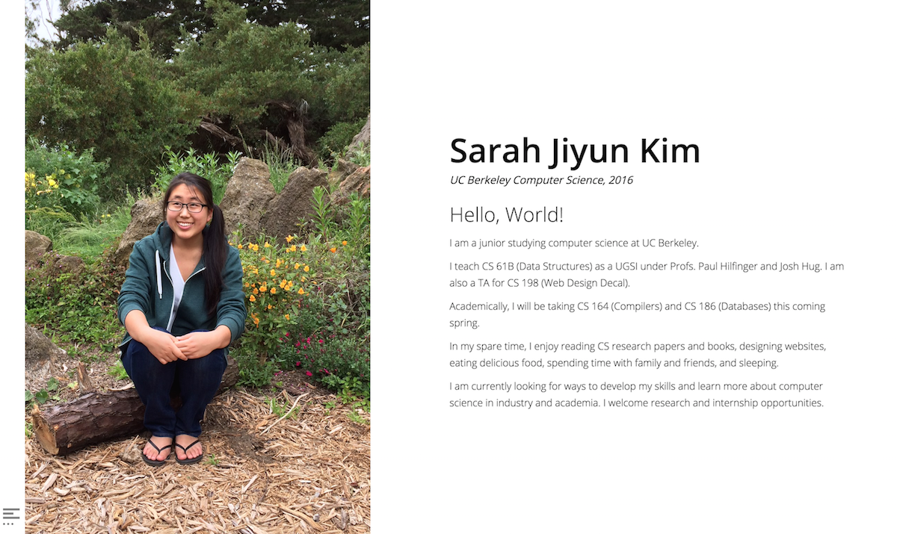
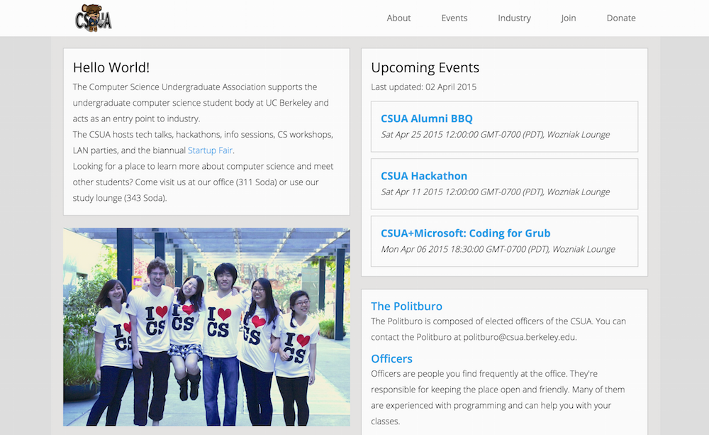
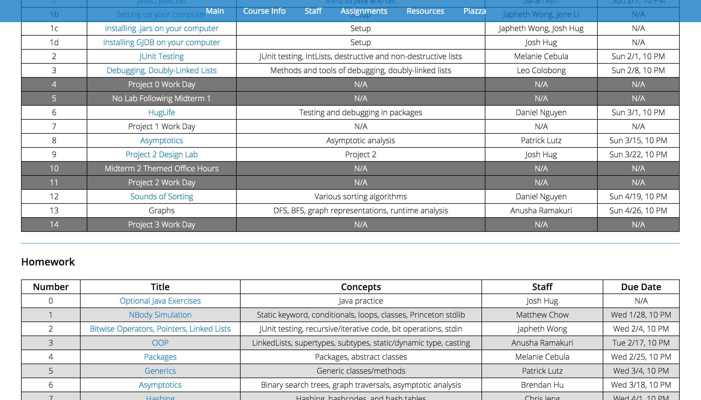

Projects
Featured
Personal
Work
School
WDD Portal
May 2014 - May 2015
Portal was built by Web Design Decal staff to address our need for better course
management software.
It is regularly visited by over 100 students who use it to submit homework,
check-in attendance, and view grades.
Staff use it to view and grade assignments, track attendance, and host
material for students. I am a primary developer for the Django back-end.

Personal Website
November 2013 - Present
This personal website is my own piece of real estate on the Internet.
Over time, it has gone through numerous redesigns.
I use HTML, CSS, and JavaScript/jQuery. This website is currently
hosted on GitHub Pages.
I also use Google Analytics to track visitor statistics and Disqus for
(infrequent) user comments.

CSUA Website
October 2013 - December 2014
The UC Berkeley Computer Science Undergraduate Association supports
undergraduate computer scientists by providing computing services
and by running informational workshops and events featuring speakers
from industry and academia.
I used HTML, CSS, and JavaScript/jQuery. The website is hosted on the CSUA's soda.berkeley.edu server.
I used HTML, CSS, and JavaScript/jQuery. The website is hosted on the CSUA's soda.berkeley.edu server.

UPE Nu Website
March 2014 - May 2014
As a member of the IT Committee for UPE, I helped build part of the
website's Django backend. I worked on creating Officer and UserProfile
models and dynamically generating the office hours, tutoring, and
officers pages by querying the database.

CS 61B Website
December 2014 - May 2015

Monarch Initiative
December 2013 - July 2014
The Monarch Initiative Discovery System contains a wealth of information
about model organisms, disease, phenotypes, genes, pathways, protein and genetic
interactions, and publications that suggest relationships among data points. It is
intended for use by researchers, scientists, and clinicians.
I worked as a web developer & designer to ensure that the data is processed and
displayed clearly.


CS 61BL Lab Infrastructure
May 2014 - August 2014
I created a new labs website
for CS 61BL at UC Berkeley to replace the outdated UC-Wise system. I received help from
Nate Titterton and used some JavaScript
loader files created originally by BJC Berkeley
for CS 10. An example lab is linked below.

CS 61BL Website
May 2014 - August 2014
I created a simple static course website for CS 61BL (Data Structures & Programming
Methodology in Java). The instructor and I update this site regularly with
announcements, homework assignments, links to the lab website, lecture slides,
and reading materials. It also contains a listing of the course policies.
Graph API & Clients
CS 61B, December 2013
I built a graph data structure and two clients in CS 61B with Prof.
Hilfinger. One client modeled a make file system and used graphs to
build prerequisites and process targets. The other
client (pictured left) took in map data of locations and roads and output
directions for the shortest path between two points.
This project was built in Java. I learned about API implementation, make file systems, graph traversals, and shortest path algorithms.
This project was built in Java. I learned about API implementation, make file systems, graph traversals, and shortest path algorithms.
Digit Recognition
CS 61C, February/April 2014
My partner and I implemented a simple version of digit recognition by
comparing the "digit distances" between a set of template images and a
test image in C.
I later used OpenMP, SSE Intrinsics, and loop unrolling to optimize the code
for the CPU. I also created a GPU-optimized version by translating the code
to CUDA and using array indexing rather than copying data to boost performance.
Firewall
CS 168, November/December 2014
My partner and I built a stateful firewall in Python for our Internet
architecture class. We examined incoming and outgoing IPv4 packets to
pass or drop packets according to a rules file.
We also sent internal DNS responses to denied requests and tracked TCP
flows to log HTTP transactions.
From this project, I learned to inspect/create packets, read RFC standards,
and use Wireshark.